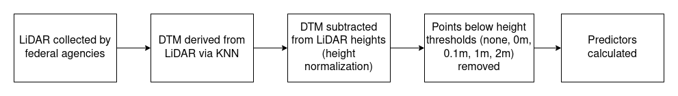

Filtering ground noise from LiDAR returns produces inferior models of forest aboveground biomass in heterogenous landscapes
Airborne LiDAR has become an essential data source for large-scale, high-resolution modeling of forest aboveground biomass and carbon stocks, enabling predictions with much higher resolution and accuracy than can be achieved using optical imagery alone. Ground noise filtering – that is, excluding returns from LiDAR point clouds based on simple height thresholds – is a common practice meant to improve the ‘signal’ content of LiDAR returns by preventing ground returns from masking useful information about tree size and condition contained within canopy returns. However, ground returns may be helpful for making accurate aboveground biomass predictions in heterogeneous landscapes that include a patchy mosaic of vegetation heights and land cover types.
In this paper, we applied several ground noise filtering thresholds while mapping forest AGB across New York State (USA), a heterogenous landscape composed of both contiguously forested and highly fragmented areas with mixed land cover types. We fit random forest models to predictor sets derived from each filtering intensity threshold and compared model accuracies, paying attention to how changes in accuracy correlated with landscape structure. We observed that removing ground noise via any height threshold systematically biases many of the LiDAR-derived variables used in AGB modeling, with mean correlation (Spearman’s \(\rho\)) between variables increasing from 0.183 to 0.266. We found that that ground noise filtering yields models of forest AGB with lower accuracy than models trained using predictors derived from unfiltered point clouds, with RMSE increasing by up to 2.2 Mg ha-1 statewide. Although we only modeled AGB for forest cover types, models fit to predictors derived from filtered point clouds performed worse as landscape heterogeneity (as measured by patch density and edge density) increased, suggesting ground returns are particularly useful when modeling edge forests. Our results suggest that ground filtering should be a carefully considered decision when mapping forest AGB, particularly when mapping heterogeneous and highly fragmented landscapes, as ground returns are more likely to represent useful ‘signal’ than extraneous ‘noise’ in these cases.
1 Graduate Program in Environmental Science, State University of New York College of Environmental Science and Forestry, 1 Forestry Drive, Syracuse, NY, 13210
2 Department of Sustainable Resources Management, State University of New York College of Environmental Science and Forestry, 1 Forestry Drive, Syracuse, NY, 13210
Introduction
Accurate assessment of forest carbon stocks for the purposes of greenhouse gas accounting and climate change mitigation requires high-resolution maps of forest aboveground biomass (AGB) across large spatial extents. The production of these maps has been aided in recent years by the proliferation of publicly available LiDAR data, with initiatives such as the United States Geological Survey’s 3D Elevation Program releasing airborne LiDAR data publicly for 84% of the United States between 2016 and 2021 (U.S. Geological Survey, 2019), and the Global Ecosystem Dynamics Investigation mission beginning to collect spaceborne LiDAR on a global scale beginning in 2018 (Dubayah et al., 2020). These data sources allow researchers access to granular data representing the 3D profile of the earth’s surface at a landscape scale (Dubayah and Drake, 2000). By aggregating returns to a pixel or object level and computing descriptive statistics characterizing the distributions of return heights, modelers are able to convert these point clouds into tabular data formats which may then be used to fit regression models for predicting forest AGB (Hawbaker et al., 2010).
However, there exists some disagreement about precisely which returns to aggregate when computing such statistics. While some LiDAR-based forest AGB models include all returns when calculating summary statistics (Hudak et al., 2020), others first filter out returns below various height thresholds when calculating percentile heights (Ma et al., 2018), density percentiles (Huang et al., 2019), or their entire suite of predictors (García et al., 2010). Filtering is typically described as being done to remove ground noise from return data, in order to avoid having “ground” returns mask any signal contained in the remaining “canopy” returns. The height threshold used in this process varies across studies, with examples ranging from 0.3m (García et al., 2010) to 1.3m (Deo et al., 2017; Ma et al., 2018) to 2m (Anderson and Bolstad, 2013) to 2.5m (Huang et al., 2019).
This diversity of approaches demonstrates a lack of consensus about a preprocessing technique that produces systematically greater estimates of percentile heights and other computed predictors. The practice itself appears to have originated with Nilsson (1996), whose early work with airborne LiDAR focused on calculating tree heights based on the maximum heights of returns, as well as stand volume as a function of the mean height of all returns. Nilsson does not appear to filter returns based on height thresholds; rather, they set the height values of all points below 2m to 0m, in effect reducing the resulting mean height values. Næsset (1997) published what may be the earliest rationale for ground noise filtering in a study calculating mean stand height from LiDAR returns, excluding returns below 2m in order to avoid interference from shrubs, rocks, and other understory features. In concert, these two studies have provided the justification for filtering out ground returns in a multitude of forest modeling studies (Anderson and Bolstad, 2013; Magnussen and Boudewyn, 1998; Wasser et al., 2013), to the extent that it appears to now be such a commonly accepted practice as to not merit discussion or citation at all (Hawbaker et al., 2010; e.g. White et al., 2015).
Yet this practice, initially justified so as to not include the height of stones in calculating the mean heights of trees (Næsset, 1997), may not be necessary or desirable as modelers turn their attention to stand characteristics such as AGB. Increased density of ground returns may be associated with sparser stands, and as a result, the left-censoring of variables derived from LiDAR pulses by omitting ground noise may remove useful information about stand structure available for predictive models. This common practice may therefore result in inferior estimates of forest AGB. Filtering may particularly harm predictive accuracy in less contiguously forested and mixed-use landscapes, as we might expect filtering to exclude more returns in areas without tree canopies intercepting and reflecting pulses. As a result, these filtering procedures may adjust LiDAR-derived variables by greater amounts in these settings compared to contiguously forested regions, given their increased proportion of ground returns. It is likely that modeling such heterogeneous landscapes will be an increasing concern over time, as larger data sets and improved computing power enables modelers to map forest AGB over larger spatial scales; however, there has not been much discussion in the literature concerning any effects filtering may have on forest AGB predictions either in these landscapes or in more homogeneous settings.
Such a discussion is particularly timely given the current focus on producing high-resolution maps of forest AGB. Numerous studies in recent years have produced such maps using a combination of publicly-available LiDAR and field measurements collected through the United States Forest Service Forest Inventory and Analysis (FIA) program (Chen et al., 2016; Huang et al., 2019; Hurtt et al., 2019; for instance, Johnson et al., 2022), and despite limitations in LiDAR density and FIA spatial measurement accuracy have produced admirable results. However, such studies may be limiting their success due to this common LiDAR preprocessing procedure.
In this paper, we use publicly-available LiDAR data sets representing a range of contiguously forested and mixed-use landscapes to investigate the impacts of ground noise filtering on predictive models of forest AGB. We set out to first identify how filtering ground noise impacts the distribution of commonly used LiDAR-derived predictors, using multiple height thresholds as found throughout the literature. We then fit models to each of these predictor sets using the random forest algorithm (Breiman, 2001), a tool commonly used in modeling forest AGB, to assess how the different predictor distributions afftected model performance. This study sought to inform current and future efforts looking to accurately predict forest AGB using models incorporating predictors derived from airborne LiDAR data products.
Methods
LiDAR Data Sets and Site Characteristics
In order to identify the impacts of ground filtering on predictive models of forest AGB, we obtained sixteen separate leaf-off LiDAR data sets for areas within New York State (USA; Figure 1). We refer to these data sets as representing different “regions”, though these LiDAR regions do not align with administrative or ecological boundaries. This data, collected as part of a number of cross-agency federal initiatives, resembles the relatively low-density and leaf-off LiDAR relied upon in similar forest AGB modeling work (see for instance Nilsson et al. (2017), Huang et al. (2019)), and closely resembles the remote sensing data used in typical modeling practice. Data had pulse densities between 1.98 and 3.24 points per square meter. All LiDAR data had a vertical accuracy RMSE of \(\leq\) 10 cm. While horizontal accuracy was not typically reported, expected horizontal RMSE for all data sets would be \(\leq\) 68 cm based upon sensor altitude, GNSS positional error, and INS angular error (ASPRS, 2014). Where regions overlapped (as shown by overlapping boundary lines in Figure 1), data representing the most recent LiDAR collection was used. Additional information about individual LiDAR data sets is included as Supplementary Materials S1.

Field Data
Field measurements of AGB for all trees measuring \(\geq\) 12.7 cm (5 in) diameter at breast height were taken as part of the United States Department of Agriculture (USDA) Forest Inventory and Analysis (FIA) program (Gray et al., 2012). The FIA provides data from a standardized forest inventory, with field plots on forested land being resampled on a rolling seven-year basis. FIA plots are composed of four identical circular subplots with radii of 7.32 m (24 ft), with one subplot centered at the center of the plot and the other three subplot centers located 36.6 m (120 ft) away at azimuths of 360\(^{\circ}\), 120\(^{\circ}\), and 240\(^{\circ}\). We obtained true plot centroid locations under agreement with the USDA, and used data aggregated from subplots to the plot level for all analyses and models. LiDAR data was clipped to only the measured subplot areas, with subplot locations estimated based upon the macroplot centroid, and then pooled prior to predictor derivation. Limitations of this data source include the exclusion of trees below 12.7 cm diameter, which likely results in underestimates of forest AGB, particularly in younger forests and more fragmented landscapes, and the relatively high positional inaccuracy of FIA plot locations (reported in 2005 to average approximately 5 m) (Hoppus and Lister, 2005). These limitations make associating FIA field measurements of forest AGB with specific LiDAR data difficult, particularly given the high positional inaccuracy of FIA plot locations compared to LiDAR data collections (ASPRS, 2014). Despite these limitations, however, the FIA remains an essential source for forest AGB modeling, and we follow the same procedures as the majority of USA-focused remote sensing forest AGB modeling studies (Chen et al., 2016; Huang et al., 2019; Hurtt et al., 2019; Johnson et al., 2022).
Plots entirely classified as nonforest (which are not assigned AGB by the FIA) were excluded from the dataset. Only FIA plots sampled the same year as LiDAR flights, or FIA plots with measurements both before and after the LiDAR acquisition year with a difference in AGB \(\geq\) -5% (to allow for forest growth or small-scale disturbance) were used for training and evaluating models. In situations where FIA year did not match LiDAR acquisition year, forest AGB was calculated by linearly interpolating between the values measured in the temporally closest FIA samples. Plots were additionally excluded if any subplots were marked as nonsampled, if FIA measurements indicated 0 \(\operatorname{Mg\ ha^{-1}}\) of forest AGB but maximum LiDAR return heights at the plot exceeded 10 meters, or if the convex hull of all LiDAR returns for a subplot contained less than 90% of the subplot’s area. This methodology was chosen to closely resemble the existing literature on forest AGB mapping (see for instance Huang et al. (2019)). Forest AGB measurements were recorded in pounds, then converted and area-normalized to units of megagrams per hectare (\(\operatorname{Mg\ ha^{-1}}\)).
LiDAR Pre-Processing
A digital terrain model (DTM) was calculated for all sites using a k-nearest-neighbors inverse-distance weighting imputation algorithm (using k = 5) as implemented in the lidR R package (Roussel et al., 2020), fit using the points classified as “ground” within the raw LiDAR point cloud data set. The calculated terrain was then subtracted from each point’s z value to create a height-normalized point cloud. Ground noise filtering rules were then applied to create five separate points clouds for each site, each representing a different ground noise filtering approach: one point cloud containing all points in the original file (hereafter referred to as “unfiltered”), one removing all points classified as “ground” in the original metadata (“ground”, equivalent to a 0m threshold), and three removing all points with normalized z values below a 0.1, 1, or 2 meter threshold (“0.1m”, “1m”, and “2m”, respectively). This process is shown as a schematic in Figure 2.

Separate sets of 40 predictors, chosen due to their prevalence in published models of AGB and forest structure, were derived from each of these point clouds using the lidR R package (Table 1) (Hawbaker et al., 2010; Huang et al., 2019; Pflugmacher et al., 2014, 2012; Roussel et al., 2020). Predictors computed for FIA plot locations were derived from only the pooled returns coincident with the sampled subplot locations, so as to not include any returns from the unsampled regions of the macroplot. For plots where ground noise filtering resulted in the removal of all points, variables were set to a default value of 0. As highly correlated predictor variables may provide the random forest model less information for forest AGB predictions, relationships between predictors were assessed using Spearmans’s correlation coefficient. Changes in predictor distributions under different filtering methodologies were assessed using Kolmogorov-Smirnov statistics (Massey, 1951).
| Predictor | Definition |
|---|---|
| H0, H10, ... H100, H95, H99 | Decile heights of returns, in meters, as well as 95th and 99th percentile return heights. |
| D10, D20... D90 | Density of returns above a certain height, as a proportion. After return height is divided into 10 equal bins ranging from 0 to the maximum height of returns, this value reflects the proportion of returns at or above each breakpoint. |
| N | Number of LiDAR returns clipped to the given FIA plot or map pixel |
| ZMEAN, ZMEAN_C | Mean height of all returns (ZMEAN) and all returns above 2.5m (ZMEAN_C) |
| Z_KURT, Z_SKEW | Kurtosis and skewness of height of all returns |
| QUAD_MEAN, QUAD_MEAN_C | Quadratic mean height of all returns (QUAD_MEAN) and all returns above 2.5m (QUAD_MEAN_C) |
| CV, CV_C | Coefficient of variation for heights of all returns (CV) and all returns above 2.5m (CV_C) |
| L2, L3, L4, L_CV, L_SKEW, L_KURT | L-moments and their ratios as defined by Hosking (1990), calculated for heights of all returns |
| CANCOV | Ratio of returns above 2.5m to all returns (Pflugmacher et al. 2012) |
| HVOL | CANCOV * ZMEAN (Pflugmacher et al. 2012) |
| RPC1 | Ratio of first returns to all returns (Pflugmacher et al. 2012) |
Model Fitting
Models were fit using the ranger R package’s implementation of the random forest algorithm (Breiman, 2001; Wright and Ziegler, 2017a), a popular machine learning technique for predicting forest aboveground biomass across landscapes (see for instance Huang et al., 2019; Hudak et al., 2020). Separate models were fit on predictors calculated using each level of ground noise filtering (“unfiltered”, “ground”, “0.1m”, “1m”, and “2m” thresholds) for each LiDAR region and a combination of all LiDAR regions, for a total of 85 separate models. Each model used data representing all available FIA plots within the relevant LiDAR region (Section 2.2). Models were fit using only LiDAR derived predictors, as it was expected that including non-LiDAR derived variables might mediate and confound the impacts of ground noise filtering.
Each of these models were tuned separately using a standard uniform grid search, with each model evaluated using the same 8,892 combinations of hyperparameters detailed in Supplementary Materials S2. Models from this set were ranked on the basis of mean root mean squared error (RMSE) from 5-fold cross validation (Stone, 1974) (Equation 5), with 5 folds chosen to reduce computational demands. In order to ensure the best model was chosen for each combination, the top 100 models as determined from 5-fold cross validation were then evaluated again using leave-one-out cross validation (Lachenbruch and Mickey, 1968), with the final model fit using the hyperparameter set with the lowest RMSE. This method ensured that each random forest compared is the best version of the model that could be fit to these predictors, with the intention that any difference in model performance will be due to ground noise filtering and not stochastic differences between models or effort spent in tuning hyperparameters. Recent work has suggested cross validation assessments of model accuracy are likely overoptimistic compared to actual predictive accuracy (Bates et al., 2021), which does not impact our aim of comparing ground noise filtering approaches within a single study, but should be kept in mind when assessing these models as forest AGB estimators in their own right.
All modeling work was done using R version 4.0.5 (R Core Team, 2021), using the dplyr (Wickham et al., 2022a), landscapemetrics (Hesselbarth et al., 2019; McGarigal and Marks, 1995), nlme (Pinheiro and Bates, 2000), purrr (Henry and Wickham, 2020), ranger (Wright and Ziegler, 2017b), raster (Hijmans, 2022a), readr (Wickham et al., 2022b), terra (Hijmans, 2022b), tibble (Müller and Wickham, 2022), and tidyr (Wickham and Girlich, 2022) packages.
Landscape Metrics
The LiDAR regions included in this study represent a diversity of landscapes, including both highly developed regions and large swaths of contiguous forest (Figure 3). While all field data was collected at plots located entirely within forested areas, forest structure and composition is highly affected by the surrounding landscape matrix (Franklin, 2006; Watling, 2018). In particular, edge effects (the impacts of adjacent nonforest environments) influence forest structure and composition in a number of ways, typically increasing species richness, the abundance of non-native species, shrub and herbaceous cover, and understory stem and foliage density while additionally increasing tree mortality and decreasing canopy tree abundance and canopy cover (Harper et al., 2005), with some of these effects remaining significant over 500 m from the edge itself (Murcia, 1995). The net effect of these impacts is that forests near a forest edge are consistently characterized by more openings in the canopy and more biomass in the understory. As a result, it stands to reason that the impacts of ground noise filtering on model performance may be associated with landscape structure, and that in particular model accuracy would be most impacted in forests located closer to a forest edge, a more common occurrence in highly fragmented landscapes (as characterized by increased patch and edge density).
As such, we investigated how changes in model accuracy due to ground noise filtering varied with differences in landscape structure. Landscape structure was quantified for each LiDAR region using temporally matching land use/land cover classifications from USGS LCMAP (Brown et al., 2020). We computed the proportion of 30 m pixels classified as forest (Equation 1) and the topographic ruggeddness index (TRI, Equation 2); DeGloria and Elliot (1999)) using the terra R package (Hijmans, 2022b), as well as edge density (Equation 3) in units of meter per hectare and patch density (Equation 4) in units of number of patches per 100 hectares for each individual LiDAR region using the landscapemetrics R package (Hesselbarth et al., 2019; McGarigal and Marks, 1995).
\[ \operatorname{Forest\ Cover\ \%} = \frac{F}{A} \tag{1}\]
\[ \operatorname{TRI} = \frac{\sum_{i=1}^{8}{\left|x - x_{i}\right|}}{8} \tag{2}\]
\[ \operatorname{Edge\ Density} = \frac{E}{A} \cdot 10000 \tag{3}\]
\[ \operatorname{Patch\ Density} = \frac{N}{A} \cdot 10000 \cdot 100 \tag{4}\]
Where \(F\) is the area classified as forest in square meters, \(A\) the total landscape area in square meters, \(x\) the elevation of a grid cell and \(x_{i}\) the elevation of its eight neighbors, \(E\) the total landscape edge in meters, and \(N\) the number of patches in the region. For the purposes of this study, patches were defined as contiguous areas of 30m pixels assigned the same land cover classification by LCMAP (Brown et al., 2020), and edges defined as the perimeters of these patches.
Model Assessment
Models were evaluated using multiple performance metrics in order to capture the variety of ways model performance can vary. Performance metrics calculated included mean absolute error (MAE, Equation 7), which captures the mean magnitude of errors across all observations, root-mean-squared error in \(\operatorname{Mg\ ha^{-1}}\) (RMSE, Equation 5), which weights larger errors more heavily than MAE, root-mean-squared error as a percentage of mean plot forest AGB (RMSE %, Equation 6),
which allows for direct comparison of RMSE across regions with differing AGB distributions, and the coefficient of determination (\(R^2\), Equation 8), which measures the strength of the linear association between FIA measurements and model predictions (but does not directly reflect predictive accuracy). Given the scarcity of field data available for some LiDAR regions, metrics were calculated via leave-one-out cross validation (Lachenbruch and Mickey, 1968).
\[ \operatorname{RMSE} = \sqrt{(\frac{1}{n})\sum_{i=1}^{n}(y_{i} - \hat{y_{i}})^{2}} \tag{5}\]
\[ \operatorname{RMSE\ \%} = 100 \cdot \frac{\operatorname{RMSE}}{\bar{y}} \tag{6}\]
\[ \operatorname{MAE} = (\frac{1}{n})\sum_{i=1}^{n}\left | y_{i} -\hat{y_{i}} \right | \tag{7}\]
\[ \operatorname{R^2} = 1 - \frac{\sum_{i=1}^{n}\left(y_{i}-\hat{y}_{i}\right)^2}{\sum_{i=1}^{n}\left(y_i - \bar{y}\right)^2} \tag{8}\]
Where \(n\) is the number of FIA plots included in the data set, \(\hat{y_i}\) is the predicted value of forest AGB, \(y_{i}\) the forest AGB value measured at the corresponding location, and \(\bar{y}\) the mean forest AGB value from FIA field measurements. The difference in model performance across filtering thresholds was quantified through a linear mixed-effect model representing plot absolute error (\(|y_i - \hat{y}_i|\)) as a function of filtering threshold as a fixed effect with LiDAR region as a random effect, fit using the nlme R package (Pinheiro and Bates, 2000). Lastly, the relationship between changes in model accuracy due to ground noise filtering and each landscape structure metric (Section 2.5) was measured using Spearman’s correlation coefficient (\(\rho\)).
Results
Landscape Structure
Edge density ranged from 38.73 to 100.17 meters per hectare, patch density from 8.63 to 23.70 patches per 100 hectares, forest coverage from 15.38% to 83.29%, and TRI ranged from 0.33 to 3.34. of each LiDAR region (Figure 4). Edge density and patch density were strongly positively correlated (Spearman’s \(\rho\) = 0.953), as were forest coverage and TRI (Spearman’s \(\rho\) = 0.741). LiDAR regions had between 9 and 126 FIA plots available for models after applying plot inclusion rules, for a total of 874 plots in the combined data set (Table 3).
Variable Distribution
Filtering out ground noise resulted in shifts in predictor distributions (Figure 5). Filtering returns based upon z-thresholds or ground classifications resulted in systematically elevated height percentile and return density predictors (the H and D prefixed predictors in Table 1; Figure 5), with differences persisting into the highest percentiles. Notable differences in distributions also existed for all L-moment based predictors, with increasing height thresholds associated with increased magnitude of difference. Mean predictor values for each ground noise filtering method, alongside Kolmogorov-Smirnov test statistic values comparing the distributions of filtered predictors to that of the unfiltered predictors, are presented in Supplementary Materials S3. Shifts in predictor distributions resulted in changes to covariance among variables, as measured via Spearman correlation coefficients. More aggressive filtering approaches were generally associated with stronger positive correlations and collinearity between all variables (Figure 6).
Model Performance
Models fit to the unfiltered set of predictors were almost always equally or more accurate than those fit to predictors derived from filtered point clouds (Figure 7, Table 2, Table 3). Model accuracy generally decreased as filtering thresholds increased, with RMSE % for models fit to all regions combined increasing from 37.18% when using the unfiltered data set to 39.06% when using a threshold of 2 meters (Figure 7). An exception to this pattern was the Erie, Genesee, & Livingston LiDAR region, which saw improvements in accuracy with filtering procedures; this is likely related to the small sample size available for this region (with only 9 FIA plots available for models) making this region highly susceptible to small changes in the predictor space or hyperparameter space. In the linear mixed model representing plot absolute error as a function of filtering thresholds, with LiDAR region as a random effect, all thresholds had positive coefficients, indicating an increase in the magnitude of errors at the plot level (Table 4).
| Unfiltered | 0m | 0.1m | 1m | 2m | |
|---|---|---|---|---|---|
| RMSE | 43.826 | 45.608 | 46.622 | 45.734 | 46.044 |
| RMSE (%) | 37.177 | 38.689 | 39.548 | 38.795 | 39.058 |
| MAE | 33.560 | 35.048 | 35.974 | 35.271 | 35.540 |
| R2 | 0.609 | 0.577 | 0.558 | 0.574 | 0.568 |
| Region | # Plots | Unfiltered | 0m | 0.1m | 1m | 2m |
|---|---|---|---|---|---|---|
| All Regions | 874 | 43.826 | 45.608 | 46.622 | 45.734 | 46.044 |
| Allegany & Steuben | 38 | 43.478 | 43.102 | 42.702 | 44.589 | 44.577 |
| 3 County | 117 | 49.238 | 50.479 | 53.164 | 52.394 | 53.238 |
| Cayuga & Oswego | 19 | 23.873 | 39.584 | 34.126 | 36.687 | 39.947 |
| Clinton, Essex & Franklin | 126 | 37.255 | 39.742 | 40.821 | 39.135 | 38.952 |
| Columbia & Rensselaer | 23 | 42.689 | 39.721 | 43.885 | 48.731 | 51.126 |
| Erie, Genesee & Livingston | 9 | 56.942 | 51.461 | 30.960 | 32.279 | 49.731 |
| Franklin & St. Lawrence | 113 | 36.818 | 37.411 | 38.121 | 38.538 | 38.143 |
| Fulton, Saratoga, Herkimer & Franklin | 47 | 37.840 | 40.823 | 39.105 | 36.496 | 37.610 |
| Great Lakes | 64 | 33.790 | 36.419 | 37.395 | 35.569 | 35.497 |
| Long Island | 26 | 38.047 | 41.796 | 49.667 | 41.893 | 42.107 |
| Madison & Otsego | 58 | 39.014 | 40.252 | 41.412 | 39.937 | 40.072 |
| Oneida Subbasin | 17 | 40.490 | 42.839 | 43.741 | 45.677 | 42.455 |
| Schoharie | 30 | 52.186 | 57.639 | 55.185 | 58.110 | 56.344 |
| Southwest (spring) | 37 | 43.921 | 47.921 | 44.715 | 45.297 | 44.806 |
| Southwest (fall) | 34 | 57.744 | 64.114 | 66.464 | 66.126 | 61.060 |
| Warren, Washington & Essex | 116 | 41.072 | 39.656 | 40.816 | 41.054 | 41.678 |
| Coefficient | Standard error | t | p | |
|---|---|---|---|---|
| Intercept | 33.215 | 1.563 | 21.257 | 0.000 |
| Filtering threshold | ||||
| 0m | 1.370 | 0.950 | 1.442 | 0.149 |
| 0.1m | 2.246 | 0.950 | 2.364 | 0.018 |
| 1m | 1.779 | 0.950 | 1.872 | 0.061 |
| 2m | 1.941 | 0.950 | 2.043 | 0.041 |
Model accuracy was impacted most by filtering when the area mapped was highly fragmented or contained large tracts of non-forested land (Table 5). Increasing edge and patch densities were both positively correlated with \(\Delta\) RMSE following ground noise filtering, indicating greater increases in RMSE after filtering in more heterogenous landscapes, while increasing forest cover and TRI were negatively correlated with \(\Delta\) RMSE (Table 5).
| Filtering threshold | Edge density | Patch density | % Forest cover | TRI |
|---|---|---|---|---|
| 0m | 0.026 | 0.056 | -0.368 | -0.438 |
| 0.1m | 0.141 | 0.218 | -0.382 | -0.426 |
| 1m | 0.365 | 0.332 | -0.388 | -0.194 |
| 2m | 0.321 | 0.326 | -0.388 | -0.103 |
Discussion
This study set out to evaluate empirical support for threshold-based ground noise filtering for models of forest AGB. We found that this common practice results in worse models of forest AGB, with lower predictive accuracy across multiple combinations of LiDAR regions and filtering thresholds representing a broad spectrum of landscape structures. While filtering had minimal impact on predictive accuracy in the most contiguously forested regions, the increasing research focus on large-scale “wall-to-wall” forest AGB mapping and potential for decreased accuracy following filtering procedures should encourage future modeling studies to use unfiltered point clouds when deriving variables for models of forest AGB.
Ground noise filtering produces inferior predictive models
Our study demonstrates that the ground noise filtering approaches commonly used in preprocessing data for models of forest AGB systematically biases LiDAR-derived variables, with an end result being inferior models that produce less accurate predictions than models fit on unfiltered data sets (Figure 5, Figure 7, Table 2). Increasing intensity of ground noise filtering was generally, but not universally, associated with worse model performance (Table 2, Table 3). These patterns were generally stronger as landscape fragmentation increased, with the correlation between model errors and landscape fragmentation increasing as filtering intensity increased.
These results are intuitive when thinking about the actual stand characteristics that may lead to an abundance or lack of ground returns. Dense forest stands making full use of the available light should be expected to have fewer returns reaching below the uppermost branches, while regions with many gaps in the canopy will have more such returns. If we conceive of our returns as providing information about the height structure of the stand as a whole, rather than about individual trees, it stands to reason that variables calculated using all returns are more informative about stand metrics such as forest AGB than those using filtered point clouds which may sacrifice information about stand openness. This could explain the impact of ground noise filtering seen in this study using leaf-off LiDAR; we might expect this impact to be even more pronounced were we to use leaf-on LiDAR in its place.
Our results also make sense mechanistically given the properties of the random forest algorithm used to construct forest AGB models in this study. Random forests excel at predicting outcomes based upon the consensus of weak learners (Breiman, 2001), individual decision trees which themselves rely upon small and ephemeral correlations between predictor variables and the outcome of interest. As shown in Figure 6, ground noise filtering approaches increase positive correlations between predictor variables, with the resulting increased collinearities shrinking the number and magnitude of possible weak correlations between individual variables and forest AGB (Langford et al., 2001). While the decision trees comprising the random forest may be able to take advantage of the correlations between predictor variables and the outcome to achieve similar accuracy as when trained on unfiltered data sets, we would not expect that a process that uniformly increases the positive linear correlation between variables would be associated with improved predictions.
In the cases where models improved post ground noise filtering, the improvement in RMSE was generally minimal and restricted to the 0 and 0.1 m thresholds (Table 3). These regions were generally the most contiguously forested (Supplementary Materials S1), which may imply fewer gaps in the canopy and therefore the filtered points contain less information on stand structure (Section 4.2). The only two regions with notable improvements in RMSE had particularly little field data available (Erie, Genessee & Livingston having 9 field plots or approximately 1% of all field data, and Columbia & Rensselaer having 23 or approximately 2.5%), resulting in models with many more predictors available than observations. This makes it challenging to generalize from these models, particularly when compared to similar landscapes with more field data available which did not see the same improvements. It may be the case that these landscapes, or others not represented by the data available to this study, would benefit from some measure of LiDAR filtering. However, based upon our combined, wall-to-wall statewide model we suggest that ground noise filtering produces inferior models of forest aboveground biomass; when mapping smaller regions with less variety in landscape characteristics, modelers may wish to investigate the impacts of ground filtering for themselves.
Insights drawn from these results may not be limited to only machine learning based models. Anderson and Bolstad (2013) briefly note that, when fitting linear models to predict forest AGB, models based on unfiltered point clouds always provided better results than those fit to predictors calculated using only returns above 2 meters. However, few other forest AGB modeling studies have performed similar investigations, necessitating our current study. Our conclusions may not apply to AGB models of non-forest systems; investigations of ground noise filtering as a preprocessing step for models of corn AGB found improvements in predictive accuracy with relatively low height thresholds (Luo et al., 2016), emphasizing that commonly accepted data processing practices cannot be assumed to transfer across systems or domains to new questions of interest.
Filtering thresholds and landscape characteristics
Although we found models fit using predictors derived from unfiltered point clouds to be the most consistently accurate, the degree to which ground noise filtering damaged predictive accuracy and the relationship between filtering intensity and accuracy varied between regions. More fragmented landscapes tended to have model accuracy be more impacted by ground noise filtering, with model error increasing the most in landscapes with greater patch and edge densities (Table 5). Given that our field measurements (and therefore accuracy assessment) only include areas delineated as forest by the FIA, this relationship is likely driven by the dramatic impacts of edge effects on forest structure and composition (Harper et al., 2005). Higher patch and edge density reflect landscapes with large amounts of marginal forestland, which likely have stands with more gaps in the canopy and therefore more LiDAR returns at the lower heights investigated by this study. Areas with greater forest cover and TRI were among the least impacted by ground filtering, though the correlation between these variables makes interpreting this result difficult. It is possible that a contiguous forest permits fewer LiDAR returns to the near-ground level, meaning that less information is removed through filtering procedures; this could explain why the correlation between forest coverage and \(\Delta\) RMSE % is stable across filtering thresholds. Alternatively, it is possible that rougher landscapes (associated with a higher TRI) result in more vertical scattering among low-level returns, with the result that a point which might be accurately labeled (and filtered) at 0.1 meters in a smooth landscape is inaccurately assigned a higher elevation and not captured in the filtering procedure, retaining more information for the model. This may explain why the magnitude of correlation between TRI and \(\Delta\) RMSE % decreases monotonically with increasing filtering thresholds. We stress that these are conjectures, however, and that we cannot establish any causal linkages between forest cover, TRI, and the impacts of ground noise filtering in the current study.
Conclusion
Our results and examination of the literature suggest that ground noise filtering procedures are not well justified as a generic pre-processing procedure for studies modeling forest AGB, given both the potential information lost about stand density and structure, and the empirical inferiority of models fit using predictors derived from filtered point clouds. This impact is particularly notable within mixed-use and otherwise heterogeneous landscapes, given the increased proportion of ground returns recorded when mapping these areas compared to contiguously forested regions. Although well-justified in its original context of modeling mean stand heights, the persistence of ground noise filtering in large-scale wall-to-wall LiDAR-based forest AGB modeling appears to produce less accurate predictions than could be achieved using currently available data. We make no such claim about researchers modeling other variables using LiDAR-derived predictors. For instance, the procedure likely makes sense when modeling mean tree heights similar to Næsset’s (1997) study which originated the practice of ground noise filtering. Additionally, while we provide evidence that ground noise filtering is harmful for models of forest AGB across large heterogenous landscapes, it may be possible for models of smaller regions and more homogeneous landscapes to benefit or be unharmed by the procedure. The best data preprocessing procedure will necessarily depend on the purpose of the model (Sambasivan et al., 2021).
Acknowledgements
We would like to thank the US Forest Service Forest Inventory & Analysis program for their data sharing and cooperation, the New York State GIS Program Office for compiling LIDAR data, and the New York State Department of Environmental Conservation, Office of Climate Change, for funding support.
Conflict of Interest
The authors declare that they have no conflicting interests.
Data Availability Statement
Data for this study is available from Zenodo at https://doi.org/10.5281/zenodo.6391114 (Mahoney et al., 2022).
References
Citation
@article{jmahoney2022,
author = {Michael J Mahoney and Lucas K Johnson and Eddie Bevilacqua
and Colin M Beier},
title = {Filtering Ground Noise from {LiDAR} Returns Produces Inferior
Models of Forest Aboveground Biomass in Heterogenous Landscapes},
journal = {GIScience \& Remote Sensing},
date = {2022-07-14},
url = {https://mm218.dev/papers/ground_filtering_manuscript},
langid = {en},
abstract = {Airborne LiDAR has become an essential data source for
large-scale, high-resolution modeling of forest aboveground biomass
and carbon stocks, enabling predictions with much higher resolution
and accuracy than can be achieved using optical imagery alone.
Ground noise filtering -\/- that is, excluding returns from LiDAR
point clouds based on simple height thresholds -\/- is a common
practice meant to improve the “signal” content of LiDAR returns by
preventing ground returns from masking useful information about tree
size and condition contained within canopy returns. However, ground
returns may be helpful for making accurate aboveground biomass
predictions in heterogeneous landscapes that include a patchy mosaic
of vegetation heights and land cover types. In this paper, we
applied several ground noise filtering thresholds while mapping
forest AGB across New York State (USA), a heterogenous landscape
composed of both contiguously forested and highly fragmented areas
with mixed land cover types. We fit random forest models to
predictor sets derived from each filtering intensity threshold and
compared model accuracies, paying attention to how changes in
accuracy correlated with landscape structure. We observed that
removing ground noise via any height threshold systematically biases
many of the LiDAR-derived variables used in AGB modeling, with mean
correlation (Spearman’s \$\textbackslash rho\$) between variables
increasing from 0.183 to 0.266. We found that that ground noise
filtering yields models of forest AGB with lower accuracy than
models trained using predictors derived from unfiltered point
clouds, with RMSE increasing by up to 2.2 Mg ha\^{}-1\^{} statewide.
Although we only modeled AGB for forest cover types, models fit to
predictors derived from filtered point clouds performed worse as
landscape heterogeneity (as measured by patch density and edge
density) increased, suggesting ground returns are particularly
useful when modeling edge forests. Our results suggest that ground
filtering should be a carefully considered decision when mapping
forest AGB, particularly when mapping heterogeneous and highly
fragmented landscapes, as ground returns are more likely to
represent useful “signal” than extraneous “noise” in these cases.}
}